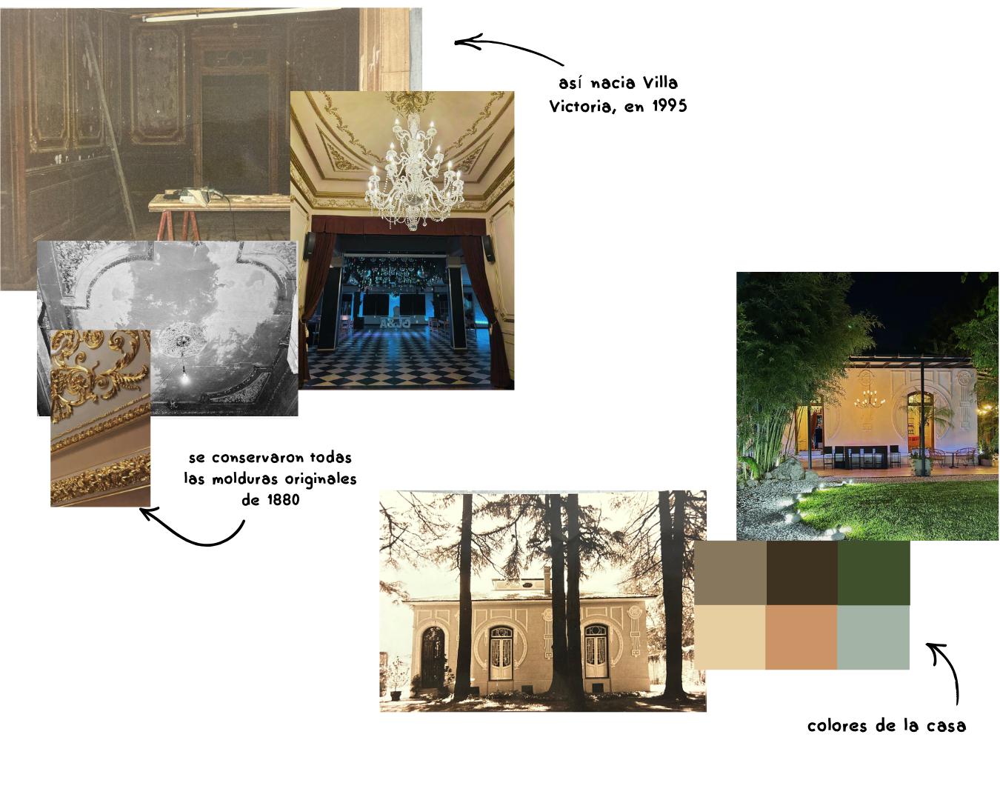
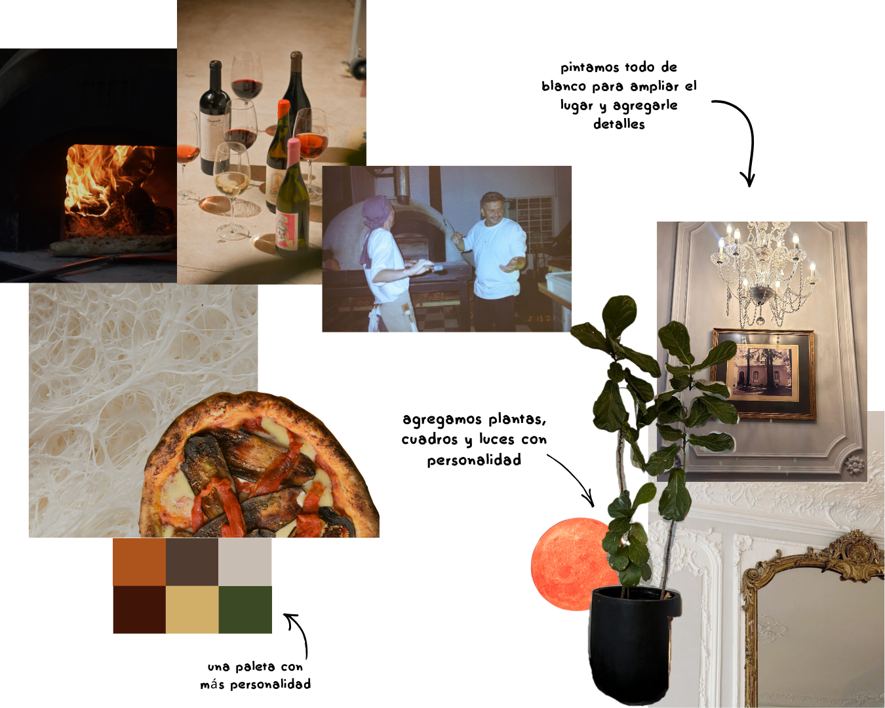

Comunicación coherente
Una marca puede tener un concepto hermoso, pero si lo que dice y lo que muestra no coinciden, se rompe la confianza.
Caso Toria · Rediseño integral de identidad: desde el logo hasta el universo visual.
Antes de llamarse TORIA, esta casona era Villa Victoria: un salón de eventos donde las familias de la zona celebraban cumpleaños, aniversarios, encuentros y momentos que hoy ya forman parte de la memoria del barrio. Sus techos altos, las puertas de madera y el viejo sótano —que alguna vez fue bodega— guardaron durante años historias, brindis y voces que aún resuenan en sus paredes. Era un lugar de paso, de celebración, de vida compartida; una casa que abría sus puertas para que la gente se encuentre.

Hoy, esa misma casa renace como TORIA: un restaurante que honra sus raíces pero encuentra una nueva forma de latir. TORIA rescata lo esencial —el fuego del horno de barro, las recetas que saben a hogar, el vino que invita a quedarse— y lo mezcla con una mirada actual, estética, sensible. Queremos que cada persona que entre sienta algo familiar, aunque nunca haya estado. Que descubra un refugio cálido donde la comida, la música, el arte y la arquitectura dialogan con el pasado para crear algo nuevo. TORIA no es solo un lugar para comer: es un espacio para volver a conectar con lo auténtico, lo sensorial y lo que realmente importa.

Creo que la identidad de una marca no es solo un logo o un feed prolijo. Es la manera en que comunica, el valor que aporta en la vida cotidiana de las personas y cómo se posiciona en una cadena de valor que hoy tiene un impacto social y ambiental muy real.
Cuando pienso una identidad, la miro como un sistema: lo visual, lo verbal y lo sensorial trabajando juntos para decir lo mismo, de forma honesta y coherente.
Una marca puede tener un concepto hermoso, pero si lo que dice y lo que muestra no coinciden, se rompe la confianza.
No alcanza con verse bien: importa qué pasa detrás. Procesos, personas y decisiones que sostienen lo que la marca promete.
La identidad también comunica qué lugar ocupa la marca en el mundo: qué cuida, qué repara y qué tipo de futuro está alimentando.
Colores, texturas, palabras, sonidos: todo suma a cómo se siente una marca cuando alguien la vive, no solo cuando la mira.